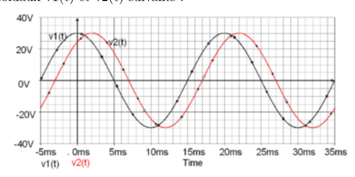
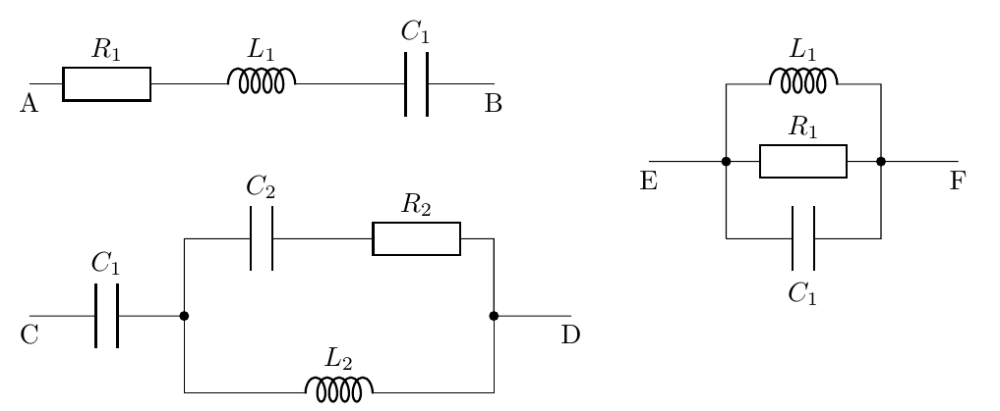
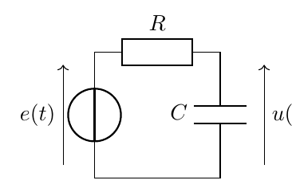
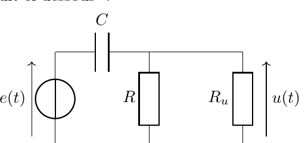
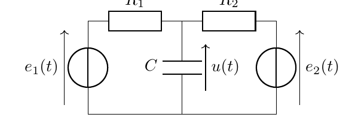
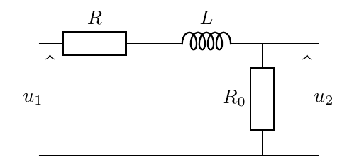
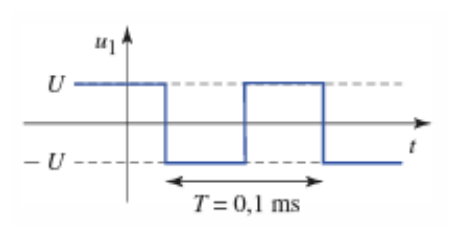
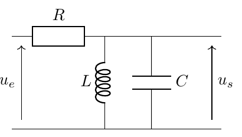
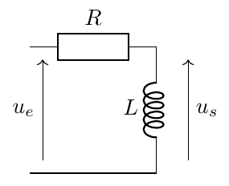
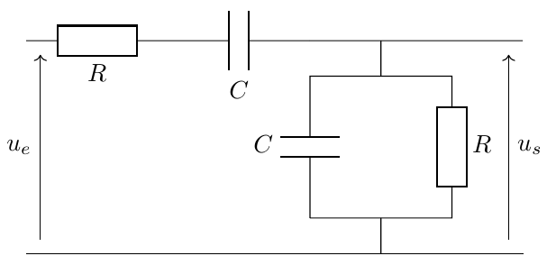

TD 3 — Régime sinusoïdal & fonction de transfert
Lire un oscillogramme, passer en complexe, impédances, fonctions de transfert, Bode, et prévoir ce que devient un signal (sinus ou créneau) à travers un filtre.
Pas de corrigé officiel fourni : correction rédigée à partir du cours. Les valeurs de l'exercice 1 sont des lectures graphiques (à ±5 % près).
Exercice 1 — Signal sinusoïdal
20 min
1. Tableau
| V max | V eff | T | f | ω | |
|---|---|---|---|---|---|
| v₁ | ≈ 30 V | 30/√2 ≈ 21,2 V | 20 ms | 50 Hz | 100π ≈ 314 rad/s |
| v₂ | ≈ 30 V | ≈ 21,2 V | 20 ms | 50 Hz | ≈ 314 rad/s |
v₁ a un maximum en t = 0 et le suivant en t = 20 ms.
2. Décalage et déphasage
Le pic de v₂ arrive environ $t_1\approx2$ ms après celui de v₁ : v₂ est en retard. $\Delta\phi=2\pi\frac{t_1}T=2\pi\frac2{20}=\frac\pi5$ rad ≈ 36° (déphasage de v₂ par rapport à v₁ : $-\pi/5$).
3. Expressions
$v_1(t)=30\cos(100\pi t)$ V ; $v_2(t)=30\cos\left(100\pi t-\frac\pi5\right)$ V.
4. Complexes
$\underline v_1=30e^{j100\pi t}$, amplitude complexe $\underline V_1=30$ ; $\underline v_2=30e^{j(100\pi t-\pi/5)}$, $\underline V_2=30e^{-j\pi/5}$.
Exercice 2 (bonus) — Impédances complexes
15 min
AB (série R₁, L₁, C₁)
$\underline Z_{AB}=R_1+jL_1\omega+\dfrac1{jC_1\omega}=R_1+j\left(L_1\omega-\dfrac1{C_1\omega}\right)$.
CD (C₁ en série avec [(C₂ + R₂) ∥ L₂])
$\underline Z_{CD}=\dfrac1{jC_1\omega}+\dfrac{\left(R_2+\frac1{jC_2\omega}\right)jL_2\omega}{R_2+\frac1{jC_2\omega}+jL_2\omega}=\dfrac1{jC_1\omega}+\dfrac{jL_2\omega\,(1+jR_2C_2\omega)}{1-L_2C_2\omega^2+jR_2C_2\omega}$.
EF (R₁ ∥ L₁ ∥ C₁)
$\dfrac1{\underline Z_{EF}}=\dfrac1{R_1}+\dfrac1{jL_1\omega}+jC_1\omega$ ⇒ $\underline Z_{EF}=\dfrac{1}{\frac1{R_1}+j\left(C_1\omega-\frac1{L_1\omega}\right)}$.
Exercice 3 — Circuit RC en sinusoïdal
10 min
Diviseur de tension en complexe
$\underline U=\underline E\dfrac{Z_C}{R+Z_C}=\dfrac{E}{1+jRC\omega}$.
Module et argument
$|\underline U|=\dfrac{E}{\sqrt{1+(RC\omega)^2}}$, $\arg\underline U=-\arctan(RC\omega)$.
Retour au réel
$$u(t)=\frac{E}{\sqrt{1+(RC\omega)^2}}\cos\big(\omega t-\arctan(RC\omega)\big)$$
Exercice 4 (bonus) — C en série, R ∥ Rᵤ en sortie
15 min
Regrouper la sortie
R et $R_u$ en parallèle : $R'=\dfrac{RR_u}{R+R_u}$.
Diviseur
$\underline U=\underline E\dfrac{R'}{R'+\frac1{jC\omega}}=e_m\dfrac{jR'C\omega}{1+jR'C\omega}$ (passe-haut 1ᵉʳ ordre).
Réponse harmonique
$$u(t)=\frac{e_mR'C\omega}{\sqrt{1+(R'C\omega)^2}}\cos\left(\omega t+\frac\pi2-\arctan(R'C\omega)\right)$$
Exercice 5 — Deux sources de fréquences différentes
25 min
Notation
$R_p=R_1\parallel R_2=\dfrac{R_1R_2}{R_1+R_2}$.
e₁ seule (e₂ = fil), pulsation ω
Millman : $\underline U_1=\dfrac{\underline E_1/R_1}{\frac1{R_1}+\frac1{R_2}+jC\omega}=\underline E_1\dfrac{R_p/R_1}{1+jR_pC\omega}$ $$u_1(t)=\frac{e_mR_p/R_1}{\sqrt{1+(R_pC\omega)^2}}\cos\big(\omega t-\arctan(R_pC\omega)\big)$$
e₂ seule (e₁ = fil), pulsation 2ω
$e_2=e_m\cos(2\omega t-\frac\pi2)$. $\underline U_2=\underline E_2\dfrac{R_p/R_2}{1+2jR_pC\omega}$ $$u_2(t)=\frac{e_mR_p/R_2}{\sqrt{1+(2R_pC\omega)^2}}\sin\big(2\omega t-\arctan(2R_pC\omega)\big)$$
Somme
$u(t)=u_1(t)+u_2(t)$ — on additionne des fonctions du temps, pas des amplitudes complexes.
Exercice 6 — Filtre d'une bobine réelle
30 min

1. Fonction de transfert
$\underline H=\dfrac{R_0}{R+R_0+jL\omega}=\dfrac{H_0}{1+j\frac{\omega}{\omega_c}}$ avec $H_0=\dfrac{R_0}{R+R_0}=\dfrac12$ et $\omega_c=\dfrac{R+R_0}{L}$.
2. Type
BF : L = fil ⇒ diviseur résistif, $H\to\frac12$ ; HF : L = ouvert ⇒ $H\to0$. Passe-bas du 1ᵉʳ ordre.
3. Pulsation caractéristique
$\omega_c=\dfrac{100}{0{,}01}=\boxed{10^4\ \mathrm{rad/s}}$ ($f_c\approx1{,}6$ kHz). Gain max $-6$ dB.
4(a) f = 10 kHz
$x=2\pi\times10^4/10^4\approx6{,}3$ : $G=\frac{0{,}5}{\sqrt{1+39{,}5}}\approx0{,}079$, $\phi=-\arctan6{,}3\approx-81°$ ⇒ $u_2\approx0{,}08\,U\cos(2\pi ft-1{,}41)$. Fortement atténué, presque en quadrature retard.
4(b) f = 100 Hz
$x\approx0{,}063\ll1$ : $G\approx0{,}5$, $\phi\approx-3{,}6°$ ⇒ $u_2\approx\frac U2\cos(2\pi\cdot100\,t)$.
4(c) Créneau de période 0,1 ms (f = 10 kHz ≫ f_c)
Toutes les harmoniques sont dans la zone $x\gg1$ où $\underline H\approx\frac{H_0\omega_c}{j\omega}$ : le filtre intègre. $u_2\approx H_0\omega_c\int u_1\,\mathrm dt$ : signal triangulaire de valeur moyenne nulle. Sur une demi-période, $\Delta u_2=H_0\omega_cU\frac T2=0{,}5\times10^4\times U\times5\cdot10^{-5}=0{,}25\,U$ ⇒ triangle d'amplitude ±U/8.
Exercice 7 (bonus) — R puis L ∥ C
35 min
1. Fonction de transfert
$Z_{LC}=\dfrac{jL\omega}{1-LC\omega^2}$ ; $\underline H=\dfrac{Z_{LC}}{R+Z_{LC}}=\dfrac{1}{1+jR\left(C\omega-\frac1{L\omega}\right)}=\boxed{\dfrac1{1+jQ\left(x-\frac1x\right)}}$
avec $\omega_0=\frac1{\sqrt{LC}}\approx14\,142$ rad/s ($f_0\approx2{,}25$ kHz), $x=\omega/\omega_0$, $Q=R\sqrt{\frac CL}\approx14{,}1$, $H_0=1$.
2. Bode — passe-bande
BF : L = fil ⇒ $H\to0$ ; HF : C = fil ⇒ $H\to0$ : passe-bande du 2ᵈ ordre, centré sur f₀.
$x\ll1$ : $H\approx\frac{jx}Q$ ⇒ +20 dB/déc, φ → +90°. $x\gg1$ : $H\approx\frac1{jQx}$ ⇒ −20 dB/déc, φ → −90°. En $x=1$ : G = 1 (0 dB), φ = 0 ; les asymptotes se coupent à $-20\log Q\approx-23$ dB. Bande passante $\Delta\omega=\omega_0/Q\approx1000$ rad/s ($\Delta f\approx160$ Hz) : très sélectif.
(La grille de phase fournie va de 0 à −180° : ici la phase va de +90° à −90°.)
3. f = 2,25 kHz = f₀
Le fondamental du créneau ($\frac{4u_{em}}\pi$) est transmis intégralement ; l'harmonique 3 est atténuée d'un facteur ≈ 38. ⇒ $u_s$ ≈ sinusoïde de fréquence f₀ et d'amplitude $\frac{4u_{em}}\pi\approx1{,}27\,u_{em}$.
3. f = 25 kHz (x ≈ 11)
Zone $\underline H\approx\frac1{jQx}=\frac{\omega_0}{jQ\omega}=\frac1{jRC\omega}$ : le filtre intègre ($u_s\approx\frac1{RC}\int u_e\,\mathrm dt$) ⇒ petit triangle, crête-à-crête $\frac{u_{em}}{RC}\cdot\frac T2=0{,}02\,u_{em}$ (amplitude ±1 % de $u_{em}$).
Exercice 8 — RL série, sortie sur L
25 min
1. Nature
BF : L = fil ⇒ $u_s=0$. HF : L = ouvert ⇒ $u_s=u_e$. Passe-haut.
2. Fonction de transfert
$\underline H=\dfrac{jL\omega}{R+jL\omega}=\dfrac{jx}{1+jx}$ — 1ᵉʳ ordre.
3. Gain et phase
$G=\dfrac{x}{\sqrt{1+x^2}}$, $G_{dB}=20\log x-10\log(1+x^2)$, $\phi=\dfrac\pi2-\arctan x$.
4. Asymptotes
$x\ll1$ : $G_{dB}\approx20\log x$ (pente +20 dB/déc, passe par 0 dB en x = 1), φ → 90°. $x\gg1$ : $G_{dB}\to0$, φ → 0. En x = 1 : −3 dB, 45°.
5. Avec une charge R_L
La sortie devient $L\parallel R_L$ : $\underline H=\dfrac{R_L}{R+R_L}\cdot\dfrac{jx'}{1+jx'}$ avec $\omega_0'=\dfrac{RR_L}{L(R+R_L)}$. Le gain HF tombe à $\frac{R_L}{R+R_L}\lt1$ et la coupure se déplace : un filtre se calcule « en sortie ouverte » ; brancher une charge le modifie (d'où l'intérêt d'étages à forte impédance d'entrée).
Exercice 9 — Pont de Wien
35 min
1. H(x)
$Z_1=R+\frac1{jC\omega}=\frac{1+jx}{jC\omega}$, $Z_2=\frac{R}{1+jx}$ ($x=RC\omega$). $$\underline H=\frac{Z_2}{Z_1+Z_2}=\frac{jx}{(1+jx)^2+jx}=\frac{jx}{1-x^2+3jx}=\boxed{\frac{1/3}{1+\frac j3\left(x-\frac1x\right)}}$$ Passe-bande, $H_0=\frac13$, $Q=\frac13$.
2. Gain et phase
$G=\dfrac{1/3}{\sqrt{1+\frac19\left(x-\frac1x\right)^2}}=\dfrac{x}{\sqrt{(1-x^2)^2+9x^2}}$, $\phi=-\arctan\dfrac{x-1/x}{3}$. Max : $G=\frac13$ ($-9{,}5$ dB) en $x=1$, φ = 0.
3. Coupures
$G=\frac{G_{max}}{\sqrt2}$ ⇔ $\left|x-\frac1x\right|=3$ ⇔ $x^2\mp3x-1=0$ ⇒ $x_{c1}=\dfrac{-3+\sqrt{13}}2\approx\boxed{0{,}30}$, $x_{c2}=\dfrac{3+\sqrt{13}}2\approx\boxed{3{,}30}$. ($x_{c1}x_{c2}=1$ et $x_{c2}-x_{c1}=3=1/Q$.)
4. Asymptotes
$x\ll1$ : $H\approx jx$ ⇒ $20\log x$ (+20 dB/déc), φ = +90°. $x\gg1$ : $H\approx\frac1{jx}$ ⇒ $-20\log x$, φ = −90°. Les asymptotes se coupent en x = 1 à 0 dB ; la vraie courbe passe 9,5 dB en dessous (Q faible = filtre peu sélectif).